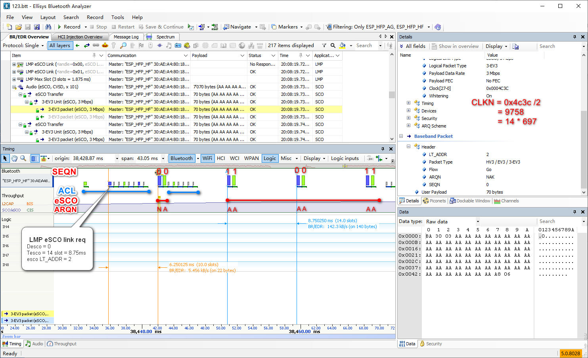

本文介绍了经典蓝牙 packet header 的组成，各字段的含义和用法, 以及自动重发请求机制(ARQ)。
This Blob introduces the composition and meaning of the BR/EDR packet header, and the automatic retransmission request(ARQ) mechanism.
Data Link Control
Flow Ctrl
There are 3 types of flow control (see Flow Control).
Stop-and-Wait flow control
Sliding-Window flow control
reservation buffer method flow control
This method is used on reliable connections, is not suitable here.
Error Ctrl
There are 3 types of automatic repeat request(ARQ).
- Stop-and-Wait ARQ
- Go-Back-N ARQ
- Selective-Reject ARQ
Stop-and-Wait ARQ is works on Stop-and-Wait flow control, Go-Back-N ARQ and Selective-Reject ARQ are work on Sliding-Window flow control.
RR: receive ready, e.g. RR i means that all frames through i-1 are acknowledged.
P-bit: Protect timer bit, when P-bit timer timeout, sending
RR(p bit = 1)to request aRR.
REJ: reject a frame, request re-transmit it and all the frames after it.
SREJ: reject a frame, only request re-transmit it.
In Stop-and-Wait ARQ, frame, ACK may be damaged.
Damaged frame
B will ACK the old frame and A re-transmit it, or A will re-transmit it after timeout.
Damaged ACK
A will re-transmit it immediately or after timeout.
In sliding-window ARQ, frame, RR and REJ/SREJ may be damaged.
Damaged frame
- B receives
frame i+1withoutframe i, will sendREJ iorSREJ i. - A send
frame iwithout any additional frames, B receives nothing. A’s P-bit timer will expire, will sendRR(p bit = 1)to request aRR.
- B receives
Damaged RR
- B send
RR ibut suffers an error in transmit. Before A’s P-bit timer expires, A receivesRR i+n. In this case, should do nothing else. - A’s P-bit timer expires, will send
RR(p bit = 1)to request aRR.
- B send
Damaged REJ/SREJ
This is equivalent to case 1.ii.
Selective-Reject ARQ will appear to be more efficient than Go-Back-N ARQ, but it need a buffer large enough to save frames.
ARQ Utilization
a = Tprop / Tframe
Tprop: propagation time from sending device to receiving device.
Tframe: time to transmit a frame.(Time for the sending device to send out all of the bit of the frame.)
P: the probability that a single frame is in error.
Figure 3 assumes that this is a full-duplex communication with infinitely short ACK packet. That is, the transmission time of the ACK packet is approximately equal to 0.
BR/EDR General Format
Basic Rate

Each packet consists of 3 entities: the access code, the header, and the payload.
Access code
The access code is used for synchronization, DC offset compensation and identification. The access code identifies all packets exchanged on a physical channel: all packets sent in the same physical channel are preceded by the same access code.
Header
The header contains link control (LC) information.
Payload
The synchronous data field and the asynchronous data field.
A packet may consist of:
the shortened access code only.
ID.
the access code and the packet header
NULL, POLL.
the access code, the packet header and the payload.
Common: FHS, DM1.
SCO: HV1, HV2, HV3, DV.
eSCO: EV3, EV4, EV5.
ACL: DM1, DH1, DM3, DH3, DM5, DH5.
Test Mode: AUX1.
Enhanced Date Rate
The access code and packet header are identical in format and modulation to Basic Rate packets. Enhanced Data Rate packets have a guard time and synchronization sequence following the packet header. Following the payload are two trailer symbols.
Guard time
The guard time is defined as the period starting at the end of the last GFSK symbol of the header and ending at the start of the reference symbol of the synchronization sequence. The length of the guard time shall be between 4.75 us and 5.25 us.
This filed is used by hardware to switch between the CFSK and DPSK.
Synchronization sequence
The length of the synchronization sequence is 11 us (11 DPSK symbols) and consists of a reference symbol (with arbitrary phase) followed by ten DPSK symbols.
This filed is used to synchronize for payload.
Trailer symbols
The trailer bits shall be all zero.
i.e. {00, 00} for the π/4-DQPSK and {000, 000} for the 8DPSK.
There are those packet types:
eSCO: 2-EV3, 3-EV3, 2-EV5, 3-EV5.
ACL: 2-DH1, 2-DH3, 2-DH5, 3-DH1, 3-DH3, 3-DH5.
BR/EDR Packet Header
The total header, including the HEC, consists of 18 bits, and is encoded with a rate 1/3 FEC resulting in a 54-bit header.
1/3 FEC: A simple 3-times repetition FEC code, The repetition code is implemented by repeating each bit three times.
The header contains link control (LC) information and consists of 6 fields:
- LT_ADDR: 3-bit logical transport address
- TYPE: 4-bit type code
- FLOW: 1-bit flow control
- ARQN: 1-bit acknowledge indication
- SEQN: 1-bit sequence number
- HEC: 8-bit header error check
LT_ADDR
Each Peripheral active in a piconet is assigned a primary 3-bit logical transport address (LT_ADDR). It will be used for exactly one of the four purposes:
The all-zero LT_ADDR is reserved for APB(Active Peripheral Broadcast) broadcast messages.
APB: The logical transport that is used to transport L2CAP user traffic and some kinds of LMP traffic to all active devices in the piconet over the BR/EDR Controller.
Note: The FHS packet and the extended inquiry response packet are the only packets which may have an all-zero LT_ADDR but are not broadcast packets.The primary LT_ADDR for ACL traffic, shall be assigned by the Central to the Peripheral when the Peripheral is activated. This is either at connection establishment or role switch, when the primary LT_ADDR is carried in the FHS payload (see Figure 13).
The secondary LT_ADDR for eSCO traffic is assigned to the Peripheral for each eSCO logical transport in use in the piconet.
For CPB logical transport. The CPB(Connectionless Peripheral Broadcast) logical transport uses a single non-zero LT_ADDR.
The CPB logical transport is used to transport profile broadcast data from a Transmitter (Central) to multiple Receivers (Peripherals).
This is the reason why it support no more than 7 Peripheral in a piconet.
Pay attention to that: allocating a secondary LT_ADDR for an eSCO logical transport, or reserving an LT_ADDR for the CPB logical transport, reduces the maximum number of active Peripherals possible in the piconet.
A peripheral may be in multiple piconets，with no upper limit.
Why does SCO use primary LT_ADDR rather than secondary LT_ADDR?
In the Bluetooth version 1.1 specification, LT_ADDR (then known as the active member device address) was used to identify the piconet member device associated with each transmission. Since this address is not easily extended to enable more logical links, the purpose of this field is repurposed for new functionality.
TYPE
The 4-bit TYPE code can distinguish 16 different types of packets, but the packet types in BR/DER are more.
First, it shall be determined whether the packet is sent on a SCO logical transport, an eSCO logical transport, an ACL logical transport, or a CPB logical transport.
Second, it shall be determined whether Enhanced Data Rate has been enabled for the logical transport (ACL or eSCO) indicated by LT_ADDR.
It can then be determined which type of SCO packet, eSCO packet, or ACL packet has been received.
FLOW
The FLOW bit is used for flow control of packets over the ACL logical transport.
FLOW = 0: A STOP indication for ACL packets. Packets including only link control information (POLL and NULL packets), SCO packets or eSCO packets can still be received.
FLOW = 1: A GO indication for ACL packets.
The FLOW bit is not used on the eSCO logical transport and shall be set to 1 on transmission and ignored upon reception (see Figure 18).
The FLOW bit is reserved for future use on the CPB logical transport.
The FLOW bit in the synchronization train packet(DM3) and Extended inquiry response(EIR) (see Figure 14) shall be set to 0 upon transmission and ignored upon reception.
The FLOW bit in the FHS is not defined in specification. It is set to 1 in packet capture (see Figure 12 & Figure 13).

When no packet is received, or the received header is in error, a GO shall be assumed implicitly. In this case, the Peripheral can receive a new packet with CRC although its RX buffer is still not emptied. The Peripheral shall then return a NAK in response to this packet even if the packet passed the CRC check.
ARQN
Stop-and-Wait ARQ is used in BR/EDR.
The 1-bit acknowledgment indication ARQN is used to inform the source of a successful transfer of payload data with CRC, and can be positive acknowledge ACK(1) or negative acknowledge NAK(0).
For a packet reception to be successful, at least the HEC must pass. In addition, the MIC and CRC must pass when present.
In the first POLL packet at the start of a new connection (as a result of a page, page scan, or role switch) the Central shall initialize the ARQN bit to NAK. The response packet sent by the Peripheral shall also have the ARQN bit set to NAK.
The initial value of the Central’s eSCO ARQN at link set-up shall be NAK.
The subsequent packets shall use the following rules, as shown in Figure 15, Figure 16 and Figure 17.
- Normally:
- When successful reception of a CRC packet, the ARQN bit shall be set to ACK.
- When no access code is detected, HEC fails, CRC fails or MIC fails, the ARQN bit shall be set to NAK (see Figure 21).
- Packets that have correct HEC but that are addressed to other Peripherals, or packets other than DH, DM, DV or EV packets, shall not affect the ARQN bit(see Figure 19).
- Except in the conditions below:
- In eSCO the ARQN bit may be set to ACK even when the CRC on an EV packet has failed thus enabling delivery of erroneous packets.
- For ACL packets, if a CRC packet with a correct header has the same SEQN as the previously received CRC packet, the ARQN bit shall be set to ACK and the payload shall be ignored without checking the CRC.
- If the Peripheral receives a packet other than DH, DM, DV or EV with the SEQN bit inverted from that in the last header successfully received on the same LT_ADDR, it shall set the ARQN bit to NAK until a DH, DM, DV or EV packet is successfully received.
- Only Peripheral? In my opinion Central is the same.
For CPB: the ARQN bit is reserved for future use.
SEQN
The SEQN bit provides a sequential numbering scheme to order the data packet stream. Normally, SEQN bit is alternated for every new CRC data payload transmission. In case of a retransmission, this bit shall not be changed so the destination can compare the SEQN bit with the previous SEQN value.
The SEQN bit of the first CRC data packet at the start of a connection (as a result of page, page scan, or role switch) on both the Central and the Peripheral sides shall be set to 1.
For ACL & SCO(DV only): SEQN bit is alternated for every new CRC data payload transmission(see Figure 19).
For eSCO: the SEQN bit shall be toggled every eSCO window. The initial value of SEQN shall be zero(see Figure 20 and Figure 21).

For packet without CRC: the SEQN bit shall remain the same as it was in the previous packet.
For FHS: the SEQN bit is not meaningful. This bit may be set to any value. It is set to 1 in a packet capture (see Figure 12 & Figure 13).
For EIR: the SEQN bit is reserved for future use. It is set to 0 in a packet capture (see Figure 14).
For CPB: the SEQN bit is reserved for future use.
For APB: the SEQN of the first broadcast packet with a CRC shall be set to SEQN = 1 by the Central and shall be inverted for each new broadcast packet with CRC thereafter.
HEC
header-error-check is used to check the header integrity.
The HEC is an 8-bit word, calculated with the 10 header bits and 8-bit default value. The 8-bit default value is as bellow:
- For FHS packets sent in Central Response substate, the Peripheral upper address part (UAP) shall be used.
- For FHS packets and extended inquiry response packets sent in Inquiry Response substate, the default check initialization (DCI: defined to be 0x00) shall be used.
- In all other cases, the UAP of the Central shall be used.
Questions
The useless field, somes are reserved for future use; somes are not meaningful, may be set to any value; somes shall be set to 1 and somes shall be set to 0. Why is there no uniform standard?
ARQ in BLE
Link Layer packet format
In BLE Link Layer packet, there is no packet header. And there is always CRC in it.

ARQ in BLE
Stop-and-Wait ARQ is used in BLE, a 1-bit nextExpectedSeqNum(NESN) and 1-bit transmitSeqNum(SN) are in the payload header of Data Physical Channel PDU or CIS Data PDU.
The initial value of SN and NESN are 0.
As Figure 24, The ARQ procotol works on all Data Physical Channel PDU or CIS Data PDU, included empty packet.
Differs with BR/DER
Advantage：
- There is always CRC in BLE Link Layer packet. So ARQ works on all BLE Link Layer packets. But ARQ works on olny some BR/EDR packet which containing CRC.
- BR/EDR’s SEQN is same with BLE’s SN.BR/EDR’s ARQN can be positive acknowledge ACK(1) or negative acknowledge NAK(0), BLE’s NESN is nextExpectedSeqNum, it is easier to handle packet loss and damaged packet.
- BR/EDR’s ARQ protocol works before receiving packet, need to handle multiple situations such as not trigger, HEC error, CRC error… BLE’s ARQ protocol only works after CRC check.
Disadvantage：
- Empty package of BR/EDR is shorter than BLE’s(without CRC).
- A new packet can be send only after the previous empty packet be ACK in BLE, it can be send immediately if the previous packet is POLL or NULL.